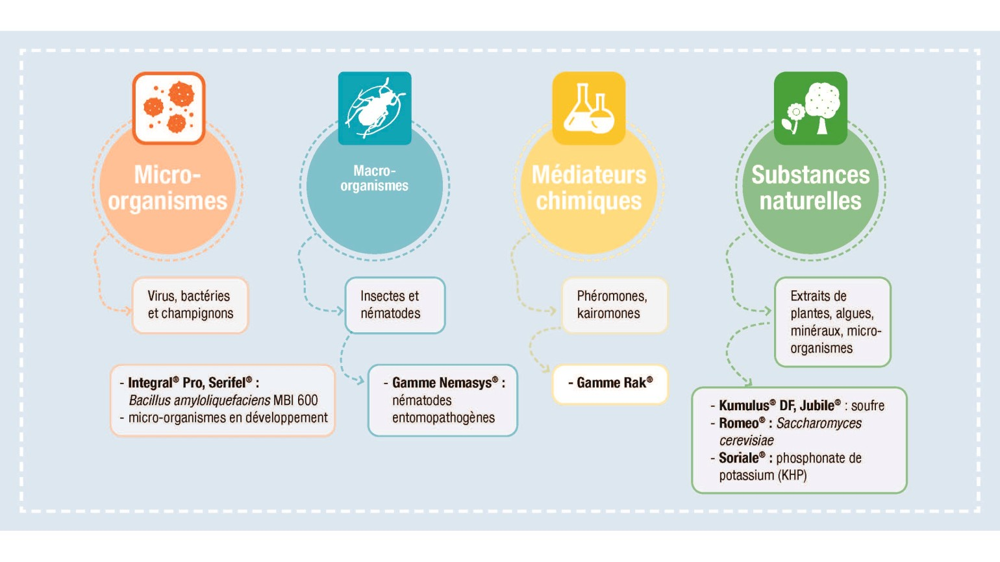

Contexte général de la SAé
1. Introduction
Dans les champs, sous serre et en plein air, mais aussi dans les parcs et les jardins, des méthodes alternatives aux produits phytopharmaceutiques conventionnels peuvent être utilisées pour lutter contre les maladies, les agresseurs de cultures (insectes, virus, bactéries, acariens…) et les mauvaises herbes. Ces méthodes, réunies sous le terme « biocontrôle », s’appuient sur les mécanismes et interactions existant dans la nature.
2. Qu’est-ce que le biocontrôle ?
Protéger les plantes pendant leur croissance est l’un des défis historiques du monde agricole. Pour limiter le recours aux produits phytopharmaceutiques conventionnels les plus préoccupants pour l’environnement et la santé, l’une des solutions réside dans les produits de biocontrôle, qui misent sur les mécanismes naturels et les interactions entre les espèces.
3. Les méthodes du biocontrôle
On distingue quatre types de produits de biocontrôle

Les micro-organismes
Ce sont des champignons, bactéries et virus utilisés pour protéger les cultures contre les ravageurs et les maladies ou encore pour stimuler la vitalité des plantes.
Les macro-organismes
Ce sont des invertébrés, insectes, acariens ou nématodes auxiliaires utilisés de façon raisonnée pour protéger les cultures contre les attaques des bioagresseurs.
Les médiateurs chimiques
Il s’agit en particulier des phéromones qui permettent le suivi des vols d’insectes ravageurs et le contrôle des populations par le piégeage et la méthode de confusion sexuelle.
Les substances naturelles
D’origine végétale, animale ou minérale (le soufre ou le cuivre, par exemple), elles permettent de lutter efficacement contre les agresseurs des cultures.